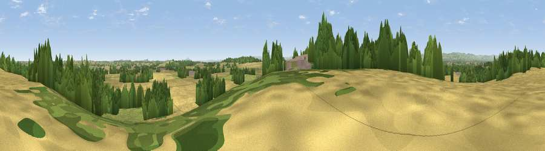

Tedsmore Hill
#22878 in England · top 79% of its area beats it · near GrimpoThe view, rendered

A 360° render of this exact spot computed from the terrain model, tree cover and land cover — summer colours, afternoon light, calibrated against photographs of famous viewpoints. Real trees, hedges and buildings will differ in detail.
The panorama
Grey silhouette: terrain skyline in each direction (720 bearings, Earth curvature and refraction included). Dashed green: skyline with trees (+15 m) and buildings (+8 m) as obstacles. Blue strip: how far the ground is visible on each bearing.
Where the view opens
Wedge length = distance to the farthest visible ground on that bearing (vegetation-aware). Rings at 10, 25 and 50 km.
What fills the view
48% cropland · 29% grassland · 22% woodland ·
Angular shares of the visible panorama (visual magnitude), not map area. Landscape diversity 0.47 (0–1 Shannon).
Key numbers
More beautiful places nearby
The staircase of upgrades: each row has a higher view potential than everything closer. Driving times are estimates from straight-line distance, calibrated against real road routing — check an actual route before setting out.
| Place | Direction | Drive | Score |
|---|---|---|---|
| Grug Hill | SSE · 3 km | ~6 min | 68.3 |
| The Cliffe | SSE · 6 km | ~12 min | 69.2 |
| Oliver's Point | SSE · 6 km | ~13 min | 71.1 |
| Viewpoint near Pant | WSW · 11 km | ~20 min | 71.6 |
| Viewpoint near Melverley | SSW · 12 km | ~23 min | 74.2 |
| Viewpoint near Trefonen | W · 13 km | ~23 min | 75.0 |
| Viewpoint near Melverley | SSW · 13 km | ~24 min | 78.2 |
| Viewpoint near Halfway House | SSW · 14 km | ~25 min | 83.3 |
52.82490, -2.93677 · source: dobih hill · position refined by local search. Computed location — check access rights before visiting.